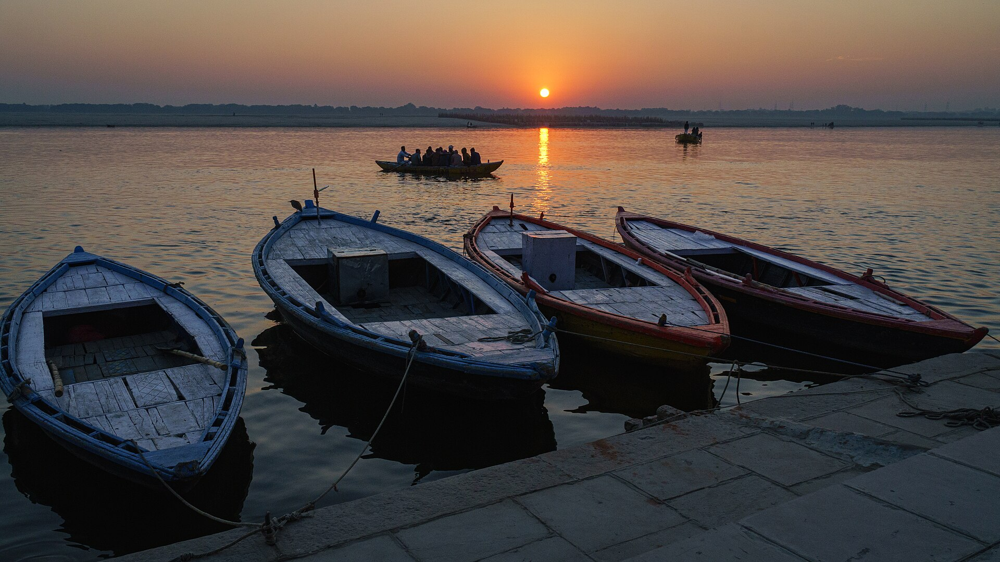
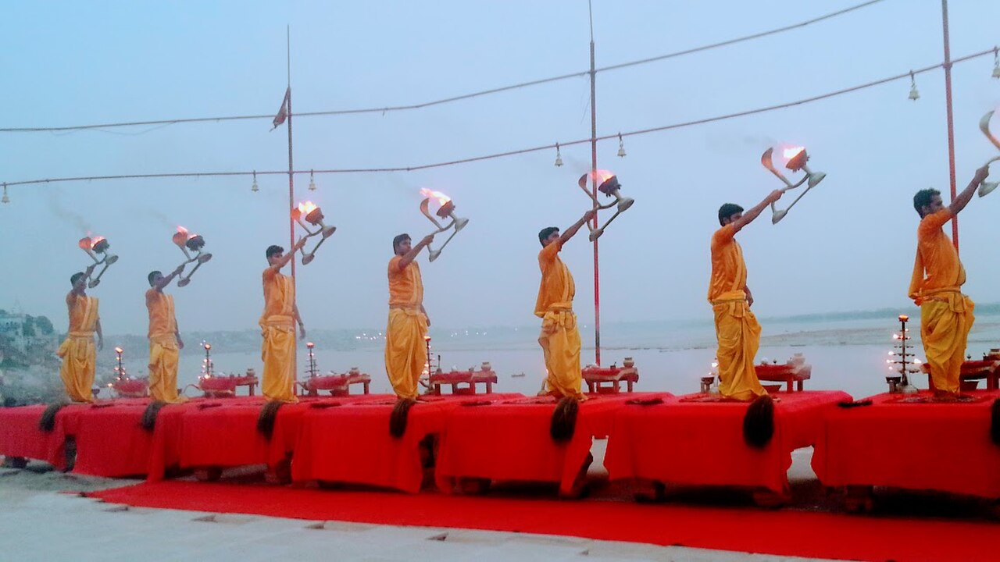
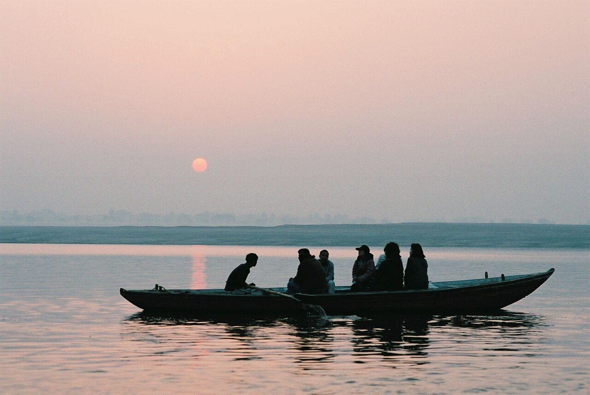
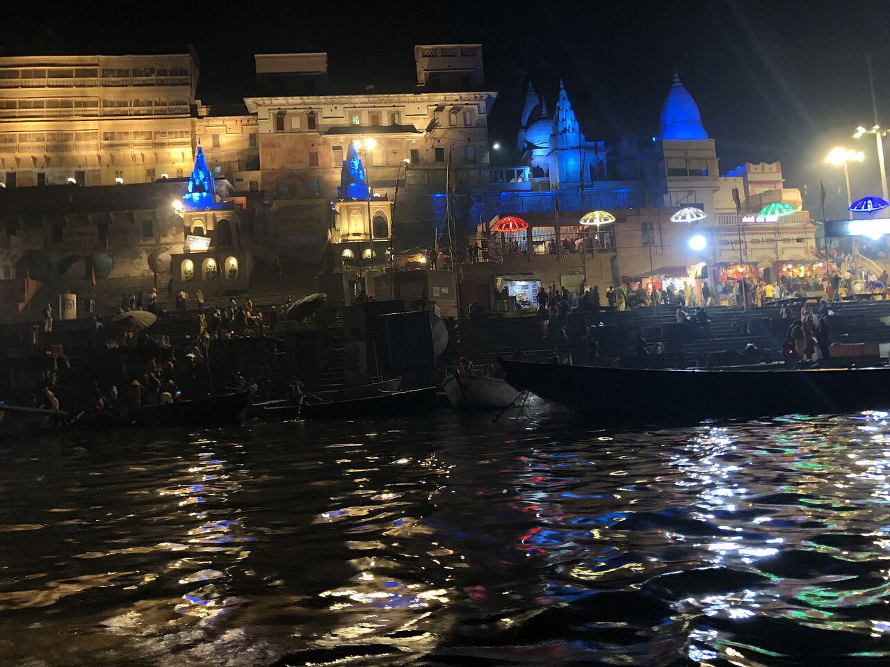
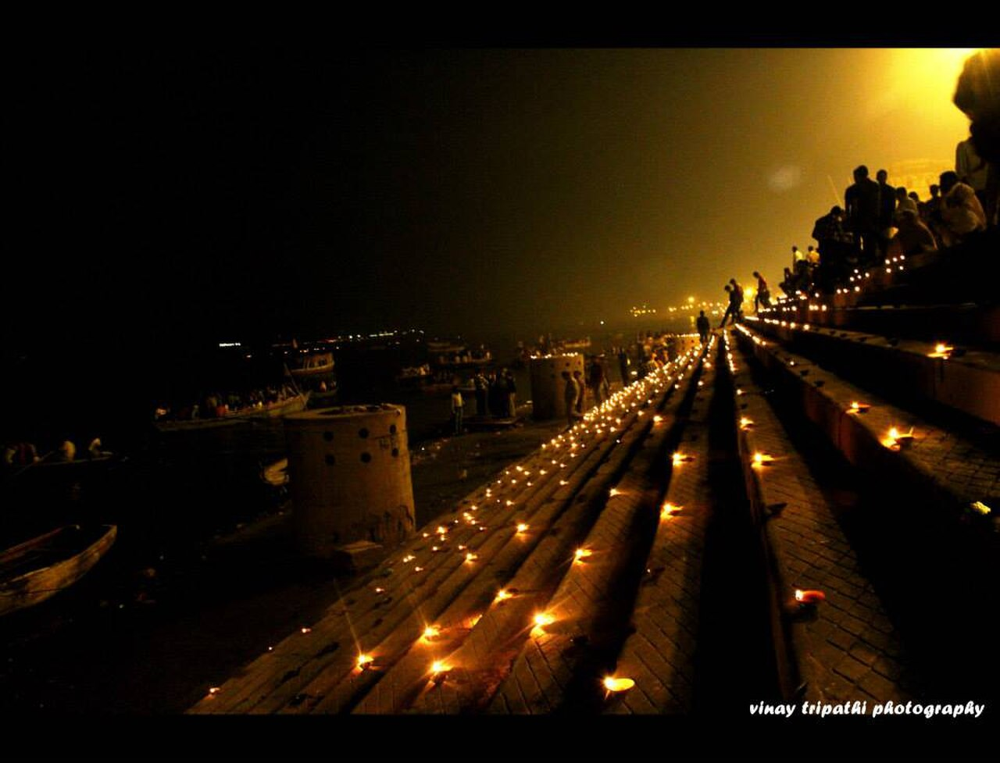

Discover the Timeless Beauty of Varanasi
Along the Ganges, stone steps, temple spires and centuries of ritual shape a city whose history remains part of everyday life. One of the oldest continuously inhabited cities in the world.

Sunrise over the Ganges, VaranasiA Living Chronicle
Varanasi is among the oldest continuously inhabited cities in the world. Situated on the western bank of the Ganges in Uttar Pradesh, it has been a centre of learning, philosophy, music and religious life for more than three thousand years.
The city's riverfront is defined by more than eighty ghats — broad stone steps leading down to the river — where pilgrims, residents and visitors gather from before dawn until long after dark. These ghats form the social and spiritual centre of the city.
Beyond the riverfront, the old city is a dense, layered settlement of narrow lanes, historic temples, merchant houses, and workshops where silk weavers continue traditions that date back centuries. Varanasi is also closely associated with Buddhism: the Buddha delivered his first sermon at nearby Sarnath around 528 BCE.



Ways to Experience the City

Sunrise Along the Ganges
A boat ride at dawn reveals the city's riverfront in its most atmospheric light, with pilgrims descending the ghats for morning rituals and the sun rising over the eastern bank.

Evening Ganga Aarti
Each evening at Dashashwamedh Ghat, a choreographed fire ceremony is performed by priests in honour of the Ganges. The ritual draws hundreds of visitors and residents.

Exploring the Old City
The lanes behind the ghats form a dense network of temples, shrines, workshops and markets. Walking here offers an unmediated encounter with the city's living heritage.

Buddhist Heritage at Sarnath
Approximately ten kilometres from the city centre, Sarnath preserves the site where the Buddha first taught after his enlightenment, with ancient stupas and a museum of Buddhist art.